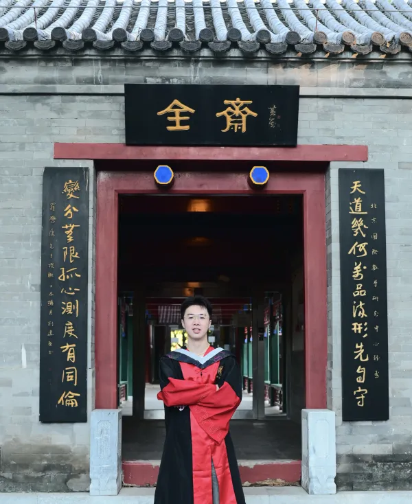

王曦立 (Xili Wang)

Ph.D.,
School of Mathematical Sciences,
Peking University
About Me
I received my Ph.D. in Computational Mathematics from the School of Mathematical Sciences, Peking University. Before that, I received my bachelor degree from the School of Mathematical Sciences, Fudan University, majoring in Information and Computational Science and ranking 1/52.
I am currently a researcher at Meituan LongCat Team. My research focuses on pre-training.
Education
School of Mathematical Sciences, Computational Mathematics
School of Mathematical Sciences, Information and Computational Science, rank 1/52
Department of Mathematics, under the supervision of Professor Xiaoliang Wan
Collaborators
Work Experience
Meituan LongCat Team, Researcher, Jun 2026 - Present
Meituan LongCat Team, Intern, Mar 2025 - Aug 2025
Research
My research interests include
- Pre-training
- Deep adaptive sampling
- PDE-constrained optimization
Publications and Preprints
- Yueyang Wang, Xili Wang, Kejun Tang, Xiaoliang Wan, Tao Zhou, and Chao Yang. Deep Adaptive Dimension Reduction for Bayesian Inference in Inverse Problems. arXiv:2605.29373, 2026.
- Zhitao Zhu, Xili Wang✉︎, Shizhe Wu, Jiawei Fu, and Xiaoqing Liu. How Should LLMs Consume High-Quality Data? Optimal Data Scheduling via Quality-Aware Functional Scaling Laws. Conference on Empirical Methods in Natural Language Processing (EMNLP main conference), 2026.
- Yueyang Wang, Jiawei Fu, Baolong Bi, Xili Wang, and Xiaoqing Liu. HE-SNR: Uncovering Latent Logic via Entropy for Guiding Mid-Training on SWE-bench. International Conference on Machine Learning (ICML regular), 2026.
- Yueyang Wang, Kejun Tang, Xili Wang, Xiaoliang Wan, Weiqing Ren, and Chao Yang. Estimating committor functions via deep adaptive sampling on rare transition paths. Journal of Computational Physics, 544:114439, 2026.
- Meituan LongCat Team, including Xili Wang. LongCat-Flash Technical Report. arXiv:2509.01322, 2025.
- Weikang Zhao, Xili Wang✉︎, Chengdi Ma, Lingbin Kong, Zhaohua Yang, Mingxiang Tuo, Xiaowei Shi, Yitao Zhai, and Xunliang Cai. MUA-RL: Multi-turn User-interacting Agent Reinforcement Learning for agentic tool use. arXiv:2508.18669, 2025.
- Xili Wang, Kejun Tang, Jiayu Zhai, Xiaoliang Wan, and Chao Yang. Deep Adaptive Sampling for Surrogate Modeling Without Labeled Data. Journal of Scientific Computing, 101:77, 2024.
- Xili Wang, Pengfei Yin, Bo Zhang, and Chao Yang. AONN-2: An adjoint-oriented neural network method for PDE-constrained shape optimization. Journal of Computational Physics, 513:113160, 2024.
- 杨超, 王曦立, 尹鹏飞, 张博. 形状优化方法及计算机存储介质和终端设备, 中国专利, CN116680763B[P], 2024-05-17.
✉︎ Corresponding author.
Honors and Awards
- 北京大学数学科学学院“优秀毕业生”，2026 年
- 2023-2024 学年北京大学优秀科研奖
- 2023-2024 学年北京大学兴业银行奖学金
- 2022-2023 学年北京大学“硕博杯”羽毛球比赛第八名
- 复旦大学“拔尖计划”荣誉学生，2021 年
- 2020-2021 学年复旦大学本科优秀学生奖学金（毕业生奖学金）
- 2019-2020 学年复旦大学本科优秀学生奖学金一等奖（董氏奖学金）
- 2019-2020 学年复旦大学本科生专业奖学金
- 2018-2019 学年复旦大学本科优秀学生奖学金二等奖
- 2018-2019 学年复旦大学本科生专业奖学金